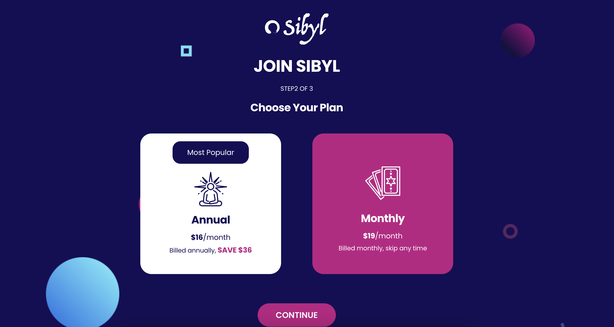
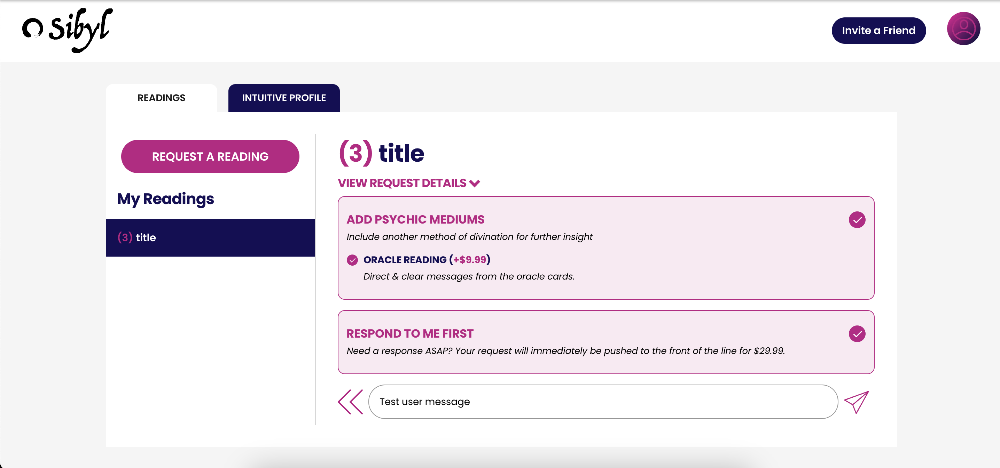

Tarot reading webapp
In this project the client wanted to a webapp to allow users to register and create different requests for tarot card readings. Also, non-subscribed users could request one-time 1, 3 or 5-card readings, and also ask for a "rush" reading, that would be done in less than 24 hours.
Overview
First, users need to register in the system. For this, they needed to choose between a monthly or annual subscription (they could pause it later but my client wanted this mandatory). They would be asked for their credit card information which was processed by Stripe to create the subscription.
Once registered, they could pause or cancel the subscription, and ask for one-time tarot reading. The reading could be pushed if the user paid more, and their request would be prioritized in the backend so that the frontend would know which to show first to the tarot readers. Users had a dashboard with their requests like different conversations with the psychics, and would be notified upon receiving a new message.
Selenium tests were developed so that we would automatically test the frontend changes.
Backend
Python, Django, Selenium, Stripe, OpenAI sdk
Database
Postgresql
Infrastructure
Azure, Github Actions
 